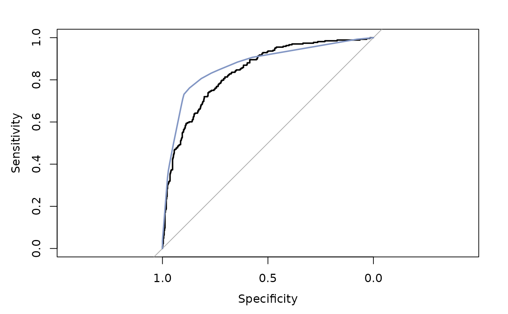
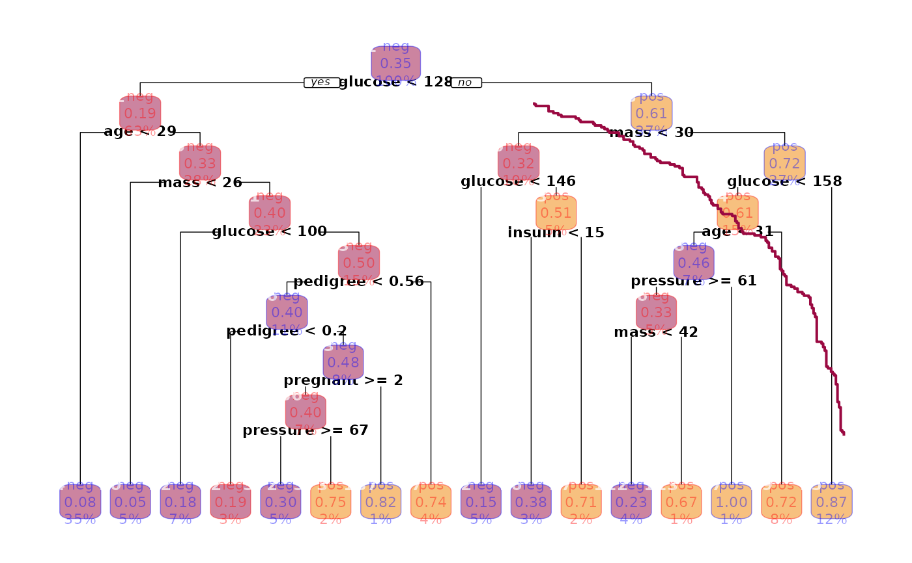
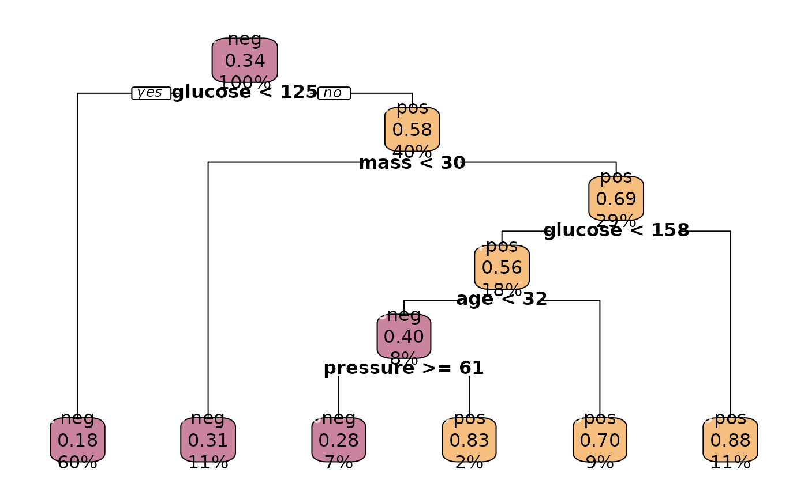

Regression and Classification Tools
ModTools-package.RdThere is a rich selection of R packages implementing algorithms for classification and regression tasks out there. The authors legitimately take the liberty to tailor the function interfaces according to their own taste and needs. For us other users, however, this often results in struggling with user interfaces, some of which are rather weird - to put it mildly - and almost always different in terms of arguments and result structures.
ModTools pursues the goal of offering uniform handling for the most important regression and classification models in applied data analyses.
The function FitMod() is designed as a simple and consistent interface to these original functions while maintaining the flexibility to pass on all possible arguments. print, plot, summary and predict operations can so be carried out following the same logic. The results will again be reshaped to a reasonable standard.
For all the functions of this package Google styleguides are used as naming rules (in absence of convincing alternatives). The 'BigCamelCase' style has been consequently applied to functions borrowed from contributed R packages as well.
As always: Feedback, feature requests, bugreports and other suggestions are welcome!
Warning
This package is still under development. You should be aware that everything in the package might be subject to change. Backward compatibility is not yet guaranteed. Functions may be deleted or renamed and new syntax may be inconsistent with earlier versions. By release of version 1.0 the "deprecated-defunct process" will be installed.
Details
The ModTools::FitMod()) function comprises interfaces to the following models:
| Regression: | |
lm() | Linear model OLS (base) |
lmrob() | Robust linear model (robustbase) |
poisson() | GLM model with family poisson (base) |
negbin() | GLM model with family negative.binomial (MASS) |
gamma() | GLM model with family gamma (base) |
tobit() | Tobit model for censored responses (package AER) |
| Classification: | |
lda() | |
| Linear discriminant analysis (MASS) | qda() |
| Quadratic discriminant analysis (MASS) | logit() |
Logistic Regression model glm, family binomial(logit)(base) | multinom() |
| Multinomial Regression model (nnet) | polr() |
| Proportional odds model (MASS) | rpart() |
| Regression and classification trees (rpart) | nnet() |
| Neuronal networks (nnet) | randomForest() |
| Random forests (randomForest) | C5.0() |
| C5.0 tree (C50) | svm() |
| Support vector machines (e1071) | naive_bayes() |
| Naive Bayes classificator (naivebayes) | LogitBoost() |
| Logit boost (using decision stumps as weak learners) (ModTools) | |
| Preprocess: | |
SplitTrainTest() | Splits a data frame or index vector into a training and a test sample |
OverSample() | Get balanced datasets by sampling with replacement. |
Manipulating rpart objects: | |
CP() | |
| Extract and plot complexity table of an rpart tree. | Node() |
| Accessor to the most important properties of a node, being a split or a leaf. | Rules() |
| Extract the decision rules from top to the end node of an rpart tree. | LeafRates() |
| Returns the misclassification rates in all end nodes. | |
| Prediction and Validation: | |
Response() | Extract the response variable of any model. |
predict() | Consistent predict for FitMod models |
VarImp() | Variable importance for most FitMod models |
ROC() | ROC curves for all dichotomous classification FitMod models |
BestCut() | Find the optimal cut for a classification based on the ROC curve. |
PlotLift() | Produces a lift chart for a binary classification model |
TModC() | Aggregated results for multiple FitMod classification models |
Tune() | Tuning approaches to find optimal parameters for FitMod classification models. |
RobSummary() | Robust summary for GLM models (poisson). |
| Tests: | |
BreuschPaganTest() | |
| Breusch-Pagan test against heteroskedasticity. |
Author
Andri Signorell
Helsana Versicherungen AG, Health Sciences, Zurich
HWZ University of Applied Sciences in Business Administration Zurich.
Includes R source code and/or documentation previously published by (in alphabetical order):
Bernhard Compton, Marcel Dettling, Max Kuhn, Michal Majka, Dan Putler, Jarek Tuszynski, Robin Xavier, Achim Zeileis
The good things come from all these guys, any problems are likely due to my tweaking.
Thank you all!
Maintainer: Andri Signorell <andri@signorell.net>
Examples
r.swiss <- FitMod(Fertility ~ ., swiss, fitfn="lm")
r.swiss
#>
#> Call:
#> lm(formula = Fertility ~ ., data = swiss)
#>
#> Coefficients:
#> (Intercept) Agriculture Examination Education
#> 66.9152 -0.1721 -0.2580 -0.8709
#> Catholic Infant.Mortality
#> 0.1041 1.0770
#>
# PlotTA(r.swiss)
# PlotQQNorm(r.swiss)
## Count models
data(housing, package="MASS")
# poisson count
r.pois <- FitMod(Freq ~ Infl*Type*Cont + Sat, family=poisson, data=housing, fitfn="poisson")
# negative binomial count
r.nb <- FitMod(Freq ~ Infl*Type*Cont + Sat, data=housing, fitfn="negbin")
summary(r.nb)
#>
#> Call:
#> glm.nb(formula = Freq ~ Infl * Type * Cont + Sat, data = housing,
#> init.theta = 11.58904011, link = log)
#>
#> Coefficients:
#> Estimate Std. Error z value Pr(>|z|)
#> (Intercept) 3.14037 0.20801 15.097 < 2e-16 ***
#> InflMedium 0.26615 0.28836 0.923 0.356028
#> InflHigh -0.25336 0.30111 -0.841 0.400113
#> TypeApartment 0.39532 0.28603 1.382 0.166945
#> TypeAtrium -0.77634 0.32149 -2.415 0.015742 *
#> TypeTerrace -0.80653 0.32296 -2.497 0.012515 *
#> ContHigh -0.02395 0.29474 -0.081 0.935244
#> Sat.L 0.16860 0.07525 2.240 0.025070 *
#> Sat.Q 0.25749 0.07821 3.292 0.000994 ***
#> InflMedium:TypeApartment -0.12807 0.39875 -0.321 0.748082
#> InflHigh:TypeApartment 0.15140 0.41087 0.368 0.712507
#> InflMedium:TypeAtrium -0.41265 0.45633 -0.904 0.365849
#> InflHigh:TypeAtrium -0.13006 0.47471 -0.274 0.784108
#> InflMedium:TypeTerrace 0.01666 0.44423 0.038 0.970080
#> InflHigh:TypeTerrace -0.06969 0.47429 -0.147 0.883177
#> InflMedium:ContHigh -0.12632 0.41042 -0.308 0.758256
#> InflHigh:ContHigh -0.59072 0.44424 -1.330 0.183609
#> TypeApartment:ContHigh 0.52179 0.40019 1.304 0.192281
#> TypeAtrium:ContHigh 0.71556 0.43760 1.635 0.102013
#> TypeTerrace:ContHigh 1.15028 0.43270 2.658 0.007852 **
#> InflMedium:TypeApartment:ContHigh 0.01178 0.56001 0.021 0.983224
#> InflHigh:TypeApartment:ContHigh 0.13235 0.59111 0.224 0.822837
#> InflMedium:TypeAtrium:ContHigh 0.14135 0.62032 0.228 0.819752
#> InflHigh:TypeAtrium:ContHigh 0.42364 0.65770 0.644 0.519496
#> InflMedium:TypeTerrace:ContHigh -0.51739 0.60483 -0.855 0.392307
#> InflHigh:TypeTerrace:ContHigh -0.49705 0.66522 -0.747 0.454946
#> ---
#> Signif. codes: 0 ‘***’ 0.001 ‘**’ 0.01 ‘*’ 0.05 ‘.’ 0.1 ‘ ’ 1
#>
#> (Dispersion parameter for Negative Binomial(11.589) family taken to be 1)
#>
#> Null deviance: 275.558 on 71 degrees of freedom
#> Residual deviance: 67.887 on 46 degrees of freedom
#> AIC: 535.29
#>
#> Number of Fisher Scoring iterations: 1
#>
#>
#> Theta: 11.59
#> Std. Err.: 2.92
#>
#> 2 x log-likelihood: -481.289
r.log <- FitMod(log(Freq) ~ Infl*Type*Cont + Sat, data=housing, fitfn="lm")
summary(r.log)
#>
#> Call:
#> lm(formula = log(Freq) ~ Infl * Type * Cont + Sat, data = housing)
#>
#> Residuals:
#> Min 1Q Median 3Q Max
#> -0.90539 -0.22284 0.01119 0.18857 0.96514
#>
#> Coefficients:
#> Estimate Std. Error t value Pr(>|t|)
#> (Intercept) 3.140416 0.267518 11.739 1.95e-15 ***
#> InflMedium 0.259891 0.378328 0.687 0.4956
#> InflHigh -0.379083 0.378328 -1.002 0.3216
#> TypeApartment 0.219444 0.378328 0.580 0.5647
#> TypeAtrium -0.785497 0.378328 -2.076 0.0435 *
#> TypeTerrace -0.931069 0.378328 -2.461 0.0177 *
#> ContHigh -0.075612 0.378328 -0.200 0.8425
#> Sat.L 0.199559 0.094582 2.110 0.0403 *
#> Sat.Q 0.199376 0.094582 2.108 0.0405 *
#> InflMedium:TypeApartment 0.048725 0.535036 0.091 0.9278
#> InflHigh:TypeApartment 0.398374 0.535036 0.745 0.4603
#> InflMedium:TypeAtrium -0.400214 0.535036 -0.748 0.4583
#> InflHigh:TypeAtrium 0.002462 0.535036 0.005 0.9963
#> InflMedium:TypeTerrace 0.143412 0.535036 0.268 0.7899
#> InflHigh:TypeTerrace 0.154151 0.535036 0.288 0.7746
#> InflMedium:ContHigh -0.105500 0.535036 -0.197 0.8446
#> InflHigh:ContHigh -0.737873 0.535036 -1.379 0.1745
#> TypeApartment:ContHigh 0.697935 0.535036 1.304 0.1986
#> TypeAtrium:ContHigh 0.763012 0.535036 1.426 0.1606
#> TypeTerrace:ContHigh 1.114096 0.535036 2.082 0.0429 *
#> InflMedium:TypeApartment:ContHigh -0.141229 0.756655 -0.187 0.8528
#> InflHigh:TypeApartment:ContHigh 0.087753 0.756655 0.116 0.9082
#> InflMedium:TypeAtrium:ContHigh 0.060731 0.756655 0.080 0.9364
#> InflHigh:TypeAtrium:ContHigh 0.503181 0.756655 0.665 0.5094
#> InflMedium:TypeTerrace:ContHigh -0.531148 0.756655 -0.702 0.4862
#> InflHigh:TypeTerrace:ContHigh -0.296310 0.756655 -0.392 0.6972
#> ---
#> Signif. codes: 0 ‘***’ 0.001 ‘**’ 0.01 ‘*’ 0.05 ‘.’ 0.1 ‘ ’ 1
#>
#> Residual standard error: 0.4634 on 46 degrees of freedom
#> Multiple R-squared: 0.751, Adjusted R-squared: 0.6157
#> F-statistic: 5.551 on 25 and 46 DF, p-value: 2.796e-07
#>
r.ols <- FitMod(Freq ~ Infl*Type*Cont + Sat, data=housing, fitfn="lm")
summary(r.ols)
#>
#> Call:
#> lm(formula = Freq ~ Infl * Type * Cont + Sat, data = housing)
#>
#> Residuals:
#> Min 1Q Median 3Q Max
#> -22.4861 -5.2361 -0.1944 3.5347 27.0556
#>
#> Coefficients:
#> Estimate Std. Error t value Pr(>|t|)
#> (Intercept) 2.333e+01 7.076e+00 3.298 0.00189 **
#> InflMedium 7.333e+00 1.001e+01 0.733 0.46737
#> InflHigh -4.333e+00 1.001e+01 -0.433 0.66700
#> TypeApartment 1.033e+01 1.001e+01 1.033 0.30717
#> TypeAtrium -1.267e+01 1.001e+01 -1.266 0.21195
#> TypeTerrace -1.300e+01 1.001e+01 -1.299 0.20037
#> ContHigh -1.680e-14 1.001e+01 0.000 1.00000
#> Sat.L 2.976e+00 2.502e+00 1.190 0.24034
#> Sat.Q 5.835e+00 2.502e+00 2.332 0.02412 *
#> InflMedium:TypeApartment -1.667e+00 1.415e+01 -0.118 0.90676
#> InflHigh:TypeApartment 3.333e+00 1.415e+01 0.236 0.81483
#> InflMedium:TypeAtrium -8.667e+00 1.415e+01 -0.612 0.54328
#> InflHigh:TypeAtrium 1.000e+00 1.415e+01 0.071 0.94397
#> InflMedium:TypeTerrace -4.000e+00 1.415e+01 -0.283 0.77871
#> InflHigh:TypeTerrace 1.667e+00 1.415e+01 0.118 0.90676
#> InflMedium:ContHigh -4.000e+00 1.415e+01 -0.283 0.77871
#> InflHigh:ContHigh -8.667e+00 1.415e+01 -0.612 0.54328
#> TypeApartment:ContHigh 2.200e+01 1.415e+01 1.555 0.12689
#> TypeAtrium:ContHigh 1.033e+01 1.415e+01 0.730 0.46897
#> TypeTerrace:ContHigh 2.067e+01 1.415e+01 1.460 0.15098
#> InflMedium:TypeApartment:ContHigh 2.333e+00 2.001e+01 0.117 0.90769
#> InflHigh:TypeApartment:ContHigh -1.200e+01 2.001e+01 -0.600 0.55171
#> InflMedium:TypeAtrium:ContHigh 3.000e+00 2.001e+01 0.150 0.88150
#> InflHigh:TypeAtrium:ContHigh 3.667e+00 2.001e+01 0.183 0.85544
#> InflMedium:TypeTerrace:ContHigh -8.667e+00 2.001e+01 -0.433 0.66700
#> InflHigh:TypeTerrace:ContHigh -1.167e+01 2.001e+01 -0.583 0.56278
#> ---
#> Signif. codes: 0 ‘***’ 0.001 ‘**’ 0.01 ‘*’ 0.05 ‘.’ 0.1 ‘ ’ 1
#>
#> Residual standard error: 12.26 on 46 degrees of freedom
#> Multiple R-squared: 0.6882, Adjusted R-squared: 0.5187
#> F-statistic: 4.061 on 25 and 46 DF, p-value: 1.939e-05
#>
r.gam <- FitMod(Freq ~ Infl*Type*Cont + Sat, data=housing, fitfn="gamma")
summary(r.gam)
#>
#> Call:
#> glm(formula = Freq ~ Infl * Type * Cont + Sat, family = "Gamma",
#> data = housing)
#>
#> Coefficients:
#> Estimate Std. Error t value Pr(>|t|)
#> (Intercept) 4.355e-02 1.143e-02 3.809 0.000412 ***
#> InflMedium -1.005e-02 1.433e-02 -0.702 0.486503
#> InflHigh 9.653e-03 1.811e-02 0.533 0.596679
#> TypeApartment -1.288e-02 1.386e-02 -0.929 0.357851
#> TypeAtrium 5.053e-02 2.761e-02 1.830 0.073681 .
#> TypeTerrace 5.354e-02 2.835e-02 1.889 0.065241 .
#> ContHigh -1.378e-17 1.615e-02 0.000 1.000000
#> Sat.L -3.211e-03 3.155e-03 -1.018 0.314213
#> Sat.Q -9.144e-03 4.197e-03 -2.179 0.034492 *
#> InflMedium:TypeApartment 5.915e-03 1.766e-02 0.335 0.739147
#> InflHigh:TypeApartment -8.770e-03 2.134e-02 -0.411 0.683073
#> InflMedium:TypeAtrium 2.340e-02 4.077e-02 0.574 0.568768
#> InflHigh:TypeAtrium 3.286e-02 4.794e-02 0.685 0.496500
#> InflMedium:TypeTerrace -1.346e-02 3.553e-02 -0.379 0.706642
#> InflHigh:TypeTerrace 2.393e-02 4.718e-02 0.507 0.614453
#> InflMedium:ContHigh 4.784e-03 2.086e-02 0.229 0.819606
#> InflHigh:ContHigh 4.389e-02 3.364e-02 1.305 0.198497
#> TypeApartment:ContHigh -1.121e-02 1.856e-02 -0.604 0.548836
#> TypeAtrium:ContHigh -4.583e-02 3.247e-02 -1.412 0.164758
#> TypeTerrace:ContHigh -6.393e-02 3.174e-02 -2.014 0.049831 *
#> InflMedium:TypeApartment:ContHigh -1.765e-03 2.412e-02 -0.073 0.941979
#> InflHigh:TypeApartment:ContHigh -3.385e-02 3.662e-02 -0.924 0.360209
#> InflMedium:TypeAtrium:ContHigh -1.225e-02 4.752e-02 -0.258 0.797727
#> InflHigh:TypeAtrium:ContHigh -5.532e-02 6.091e-02 -0.908 0.368570
#> InflMedium:TypeTerrace:ContHigh 3.236e-02 4.143e-02 0.781 0.438774
#> InflHigh:TypeTerrace:ContHigh 1.462e-02 6.501e-02 0.225 0.823077
#> ---
#> Signif. codes: 0 ‘***’ 0.001 ‘**’ 0.01 ‘*’ 0.05 ‘.’ 0.1 ‘ ’ 1
#>
#> (Dispersion parameter for Gamma family taken to be 0.2163103)
#>
#> Null deviance: 38.140 on 71 degrees of freedom
#> Residual deviance: 10.671 on 46 degrees of freedom
#> AIC: 538.18
#>
#> Number of Fisher Scoring iterations: 6
#>
r.gami <- FitMod(Freq ~ Infl*Type*Cont + Sat, data=housing, fitfn="gamma", link="identity")
summary(r.gami)
#>
#> Call:
#> glm(formula = Freq ~ Infl * Type * Cont + Sat, family = function ()
#> Gamma(link = identity), data = housing)
#>
#> Coefficients:
#> Estimate Std. Error t value Pr(>|t|)
#> (Intercept) 23.3635 5.7553 4.060 0.000189 ***
#> InflMedium 7.1563 9.5281 0.751 0.456438
#> InflHigh -7.2034 6.9307 -1.039 0.304079
#> TypeApartment 12.6892 10.6939 1.187 0.241486
#> TypeAtrium -11.1942 6.3987 -1.749 0.086883 .
#> TypeTerrace -10.9532 6.4273 -1.704 0.095097 .
#> ContHigh -1.6216 7.8406 -0.207 0.837058
#> Sat.L 4.9368 1.4858 3.323 0.001755 **
#> Sat.Q 3.2415 1.1421 2.838 0.006731 **
#> InflMedium:TypeApartment -3.4540 16.4721 -0.210 0.834835
#> InflHigh:TypeApartment 1.4504 13.6446 0.106 0.915810
#> InflMedium:TypeAtrium -9.2801 10.1778 -0.912 0.366629
#> InflHigh:TypeAtrium 3.5471 7.6884 0.461 0.646714
#> InflMedium:TypeTerrace -4.5638 10.5680 -0.432 0.667870
#> InflHigh:TypeTerrace 2.9450 7.6893 0.383 0.703488
#> InflMedium:ContHigh -3.5733 12.5840 -0.284 0.777715
#> InflHigh:ContHigh -7.1152 8.8705 -0.802 0.426610
#> TypeApartment:ContHigh 22.5209 18.6701 1.206 0.233888
#> TypeAtrium:ContHigh 11.5520 9.9375 1.162 0.251043
#> TypeTerrace:ContHigh 22.9328 11.8581 1.934 0.059288 .
#> InflMedium:TypeApartment:ContHigh 0.9018 27.5339 0.033 0.974015
#> InflHigh:TypeApartment:ContHigh -13.2180 21.9476 -0.602 0.549965
#> InflMedium:TypeAtrium:ContHigh 2.3032 14.8708 0.155 0.877591
#> InflHigh:TypeAtrium:ContHigh 0.3769 11.2392 0.034 0.973392
#> InflMedium:TypeTerrace:ContHigh -8.8401 16.8767 -0.524 0.602931
#> InflHigh:TypeTerrace:ContHigh -14.3587 12.7806 -1.123 0.267063
#> ---
#> Signif. codes: 0 ‘***’ 0.001 ‘**’ 0.01 ‘*’ 0.05 ‘.’ 0.1 ‘ ’ 1
#>
#> (Dispersion parameter for Gamma family taken to be 0.1923107)
#>
#> Null deviance: 38.1400 on 71 degrees of freedom
#> Residual deviance: 9.0822 on 46 degrees of freedom
#> AIC: 526.3
#>
#> Number of Fisher Scoring iterations: 14
#>
old <-options(digits=3)
TMod(r.pois, r.nb, r.log, r.ols, r.gam, r.gami)
#> Waiting for profiling to be done...
#> Waiting for profiling to be done...
#> Waiting for profiling to be done...
#> Waiting for profiling to be done...
#> coef r.pois r.nb r.log
#> 1 (Intercept) 3.136 *** 3.140 *** 3.140 ***
#> 2 InflMedium 0.273 . 0.266 0.260
#> 3 InflHigh -0.205 -0.253 -0.379
#> 4 TypeApartment 0.367 * 0.395 0.219
#> 5 TypeAtrium -0.783 *** -0.776 * -0.785 *
#> 6 TypeTerrace -0.815 *** -0.807 * -0.931 *
#> 7 ContHigh 1.409e-15 -0.024 -0.076
#> 8 Sat.L 0.116 ** 0.169 * 0.200 *
#> 9 Sat.Q 0.263 *** 0.257 *** 0.199 *
#> 10 InflMedium:TypeApartment -0.118 -0.128 0.049
#> 11 InflHigh:TypeApartment 0.175 0.151 0.398
#> 12 InflMedium:TypeAtrium -0.407 -0.413 -0.400
#> 13 InflHigh:TypeAtrium -0.169 -0.130 0.002
#> 14 InflMedium:TypeTerrace 0.006 0.017 0.143
#> 15 InflHigh:TypeTerrace -0.093 -0.070 0.154
#> 16 InflMedium:ContHigh -0.140 -0.126 -0.105
#> 17 InflHigh:ContHigh -0.609 * -0.591 -0.738
#> 18 TypeApartment:ContHigh 0.503 * 0.522 0.698
#> 19 TypeAtrium:ContHigh 0.677 * 0.716 0.763
#> 20 TypeTerrace:ContHigh 1.099 *** 1.150 ** 1.114 *
#> 21 InflMedium:TypeApartment:ContHigh 0.054 0.012 -0.141
#> 22 InflHigh:TypeApartment:ContHigh 0.146 0.132 0.088
#> 23 InflMedium:TypeAtrium:ContHigh 0.156 0.141 0.061
#> 24 InflHigh:TypeAtrium:ContHigh 0.478 0.424 0.503
#> 25 InflMedium:TypeTerrace:ContHigh -0.498 -0.517 -0.531
#> 26 InflHigh:TypeTerrace:ContHigh -0.447 -0.497 -0.296
#> 27 ---
#> 28 r.squared - - 0.751
#> 29 adj.r.squared - - 0.616
#> 30 sigma - - 0.463
#> 31 logLik -279.213 -240.645 -30.648
#> 32 logLik0 -587.313 -290.899 -
#> 33 G2 616.201 100.508 -
#> 34 deviance - - 9.876
#> 35 AIC 610.426 535.289 115.296
#> 36 BIC 669.619 596.759 176.766
#> 37 numdf 26 27 25
#> 38 dendf - - 46
#> 39 N 72 72 72
#> 40 n vars 8 8 8
#> 41 n coef 26 26 26
#> 42 F - - 5.551
#> 43 p - - 0.000
#> 44 MAE 6.641 6.608 0.276
#> 45 MAPE 0.354 0.345 0.104
#> 46 MSE 92.754 97.134 0.137
#> 47 RMSE 9.631 9.856 0.370
#> 48 McFadden 0.525 0.173 -
#> 49 McFaddenAdj 0.480 0.083 -
#> 50 Nagelkerke 1.000 0.753 -
#> 51 CoxSnell 1.000 0.752 -
#> r.ols r.gam r.gami
#> 1 23.333 ** 0.044 *** 23.363 ***
#> 2 7.333 -0.010 7.156
#> 3 -4.333 0.010 -7.203
#> 4 10.333 -0.013 12.689
#> 5 -12.667 0.051 . -11.194 .
#> 6 -13.000 0.054 . -10.953 .
#> 7 -1.680e-14 -0.000 -1.622
#> 8 2.976 -0.003 4.937 **
#> 9 5.835 * -0.009 * 3.241 **
#> 10 -1.667 0.006 -3.454
#> 11 3.333 -0.009 1.450
#> 12 -8.667 0.023 -9.280
#> 13 1.000 0.033 3.547
#> 14 -4.000 -0.013 -4.564
#> 15 1.667 0.024 2.945
#> 16 -4.000 0.005 -3.573
#> 17 -8.667 0.044 -7.115
#> 18 22.000 -0.011 22.521
#> 19 10.333 -0.046 11.552
#> 20 20.667 -0.064 * 22.933 .
#> 21 2.333 -0.002 0.902
#> 22 -12.000 -0.034 -13.218
#> 23 3.000 -0.012 2.303
#> 24 3.667 -0.055 0.377
#> 25 -8.667 0.032 -8.840
#> 26 -11.667 0.015 -14.359
#> 27
#> 28 0.688 - -
#> 29 0.519 - -
#> 30 12.256 - -
#> 31 -266.465 -242.088 -236.152
#> 32 - -290.204 -290.204
#> 33 - 96.232 108.104
#> 34 6909.139 - -
#> 35 586.930 538.176 526.304
#> 36 648.400 599.646 587.774
#> 37 25 27 27
#> 38 46 - -
#> 39 72 72 72
#> 40 8 8 8
#> 41 26 26 26
#> 42 4.061 - -
#> 43 0.000 - -
#> 44 7.050 6.883 6.823
#> 45 0.385 0.371 0.321
#> 46 95.960 98.993 102.471
#> 47 9.796 9.950 10.123
#> 48 - 0.166 0.186
#> 49 - 0.076 0.097
#> 50 - 0.737 0.777
#> 51 - 0.737 0.777
options(old)
## Ordered Regression
r.polr <- FitMod(Sat ~ Infl + Type + Cont, data=housing, fitfn="polr", weights = Freq)
# multinomial Regression
# r.mult <- FitMod(factor(Sat, ordered=FALSE) ~ Infl + Type + Cont, data=housing,
# weights = housing$Freq, fitfn="multinom")
# Regression tree
r.rp <- FitMod(factor(Sat, ordered=FALSE) ~ Infl + Type + Cont, data=housing,
weights = housing$Freq, fitfn="rpart")
# compare predictions
d.p <- expand.grid(Infl=levels(housing$Infl), Type=levels(housing$Type), Cont=levels(housing$Cont))
d.p$polr <- predict(r.polr, newdata=d.p)
# ??
# d.p$ols <- factor(round(predict(r.ols, newdata=d.p)^2), labels=levels(housing$Sat))
# d.p$mult <- predict(r.mult, newdata=d.p)
d.p$rp <- predict(r.rp, newdata=d.p, type="class")
d.p
#> Infl Type Cont polr rp
#> 1 Low Tower Low Low High
#> 2 Medium Tower Low High High
#> 3 High Tower Low High High
#> 4 Low Apartment Low Low Low
#> 5 Medium Apartment Low Low High
#> 6 High Apartment Low High High
#> 7 Low Atrium Low Low High
#> 8 Medium Atrium Low High High
#> 9 High Atrium Low High High
#> 10 Low Terrace Low Low Low
#> 11 Medium Terrace Low Low High
#> 12 High Terrace Low High High
#> 13 Low Tower High High High
#> 14 Medium Tower High High High
#> 15 High Tower High High High
#> 16 Low Apartment High Low Low
#> 17 Medium Apartment High High High
#> 18 High Apartment High High High
#> 19 Low Atrium High Low High
#> 20 Medium Atrium High High High
#> 21 High Atrium High High High
#> 22 Low Terrace High Low Low
#> 23 Medium Terrace High Low High
#> 24 High Terrace High High High
# Classification with 2 classes ***************
r.pima <- FitMod(diabetes ~ ., d.pima, fitfn="logit")
r.pima
#>
#> Call: glm(formula = diabetes ~ ., family = "binomial", data = d.pima)
#>
#> Coefficients:
#> (Intercept) pregnant glucose pressure triceps insulin
#> -8.404696 0.123182 0.035164 -0.013296 0.000619 -0.001192
#> mass pedigree age
#> 0.089701 0.945180 0.014869
#>
#> Degrees of Freedom: 767 Total (i.e. Null); 759 Residual
#> Null Deviance: 993.5
#> Residual Deviance: 723.4 AIC: 741.4
Conf(r.pima)
#>
#> Confusion Matrix and Statistics
#>
#> Reference
#> Prediction pos neg
#> pos 156 55
#> neg 112 445
#>
#> Total n : 768
#> Accuracy : 0.7826
#> 95% CI : (0.7520, 0.8103)
#> No Information Rate : 0.6510
#> P-Value [Acc > NIR] : 1.37e-15
#>
#> Kappa : 0.4966
#> Mcnemar's Test P-Value : 1.47e-05
#>
#> Sensitivity : 0.5821
#> Specificity : 0.8900
#> Pos Pred Value : 0.7393
#> Neg Pred Value : 0.7989
#> Prevalence : 0.3490
#> Detection Rate : 0.2747
#> Detection Prevalence : 0.2031
#> Balanced Accuracy : 0.7360
#> F-val Accuracy : 0.6514
#> Matthews Cor.-Coef : 0.5041
#>
#> 'Positive' Class : pos
#>
plot(ROC(r.pima))
#> Setting levels: control = neg, case = pos
#> Setting direction: controls < cases
OddsRatio(r.pima)
#>
#> Call:
#> glm(formula = diabetes ~ ., family = "binomial", data = d.pima)
#>
#> Odds Ratios:
#> or or.lci or.uci Pr(>|z|)
#> (Intercept) 0.000 0.000 0.001 < 2.2e-16 ***
#> pregnant 1.131 1.062 1.204 1.23e-04 ***
#> glucose 1.036 1.028 1.043 < 2.2e-16 ***
#> pressure 0.987 0.977 0.997 0.0111 *
#> triceps 1.001 0.987 1.014 0.9285
#> insulin 0.999 0.997 1.001 0.1861
#> mass 1.094 1.062 1.127 2.76e-09 ***
#> pedigree 2.573 1.432 4.625 0.0016 **
#> age 1.015 0.997 1.034 0.1112
#> ---
#> Signif. codes: 0 '***' 0.001 '**' 0.01 '*' 0.05 '.' 0.1 ' ' 1
#>
#> Brier Score: 0.153 Nagelkerke R2: 0.408
#>
# rpart tree
rp.pima <- FitMod(diabetes ~ ., d.pima, fitfn="rpart")
rp.pima
#> n= 768
#>
#> node), split, n, loss, yval, (yprob)
#> * denotes terminal node
#>
#> 1) root 768 268 neg (0.65104167 0.34895833)
#> 2) glucose< 127.5 485 94 neg (0.80618557 0.19381443)
#> 4) age< 28.5 271 23 neg (0.91512915 0.08487085) *
#> 5) age>=28.5 214 71 neg (0.66822430 0.33177570)
#> 10) mass< 26.35 41 2 neg (0.95121951 0.04878049) *
#> 11) mass>=26.35 173 69 neg (0.60115607 0.39884393)
#> 22) glucose< 99.5 55 10 neg (0.81818182 0.18181818) *
#> 23) glucose>=99.5 118 59 neg (0.50000000 0.50000000)
#> 46) pedigree< 0.561 84 34 neg (0.59523810 0.40476190)
#> 92) pedigree< 0.2 21 4 neg (0.80952381 0.19047619) *
#> 93) pedigree>=0.2 63 30 neg (0.52380952 0.47619048)
#> 186) pregnant>=1.5 52 21 neg (0.59615385 0.40384615)
#> 372) pressure>=67 40 12 neg (0.70000000 0.30000000) *
#> 373) pressure< 67 12 3 pos (0.25000000 0.75000000) *
#> 187) pregnant< 1.5 11 2 pos (0.18181818 0.81818182) *
#> 47) pedigree>=0.561 34 9 pos (0.26470588 0.73529412) *
#> 3) glucose>=127.5 283 109 pos (0.38515901 0.61484099)
#> 6) mass< 29.95 76 24 neg (0.68421053 0.31578947)
#> 12) glucose< 145.5 41 6 neg (0.85365854 0.14634146) *
#> 13) glucose>=145.5 35 17 pos (0.48571429 0.51428571)
#> 26) insulin< 14.5 21 8 neg (0.61904762 0.38095238) *
#> 27) insulin>=14.5 14 4 pos (0.28571429 0.71428571) *
#> 7) mass>=29.95 207 57 pos (0.27536232 0.72463768)
#> 14) glucose< 157.5 115 45 pos (0.39130435 0.60869565)
#> 28) age< 30.5 50 23 neg (0.54000000 0.46000000)
#> 56) pressure>=61 40 13 neg (0.67500000 0.32500000)
#> 112) mass< 41.8 31 7 neg (0.77419355 0.22580645) *
#> 113) mass>=41.8 9 3 pos (0.33333333 0.66666667) *
#> 57) pressure< 61 10 0 pos (0.00000000 1.00000000) *
#> 29) age>=30.5 65 18 pos (0.27692308 0.72307692) *
#> 15) glucose>=157.5 92 12 pos (0.13043478 0.86956522) *
Conf(rp.pima)
#>
#> Confusion Matrix and Statistics
#>
#> Reference
#> Prediction neg pos
#> neg 449 72
#> pos 51 196
#>
#> Total n : 768
#> Accuracy : 0.8398
#> 95% CI : (0.8122, 0.8641)
#> No Information Rate : 0.6510
#> P-Value [Acc > NIR] : < 2.2e-16
#>
#> Kappa : 0.6410
#> Mcnemar's Test P-Value : 0.0713
#>
#> Sensitivity : 0.8980
#> Specificity : 0.7313
#> Pos Pred Value : 0.8618
#> Neg Pred Value : 0.7935
#> Prevalence : 0.6510
#> Detection Rate : 0.6784
#> Detection Prevalence : 0.5846
#> Balanced Accuracy : 0.8147
#> F-val Accuracy : 0.8795
#> Matthews Cor.-Coef : 0.6422
#>
#> 'Positive' Class : neg
#>
lines(ROC(rp.pima), col=hblue)
#> Setting levels: control = neg, case = pos
#> Setting direction: controls < cases

# to be improved
plot(rp.pima, col=SetAlpha(c("blue","red"), 0.4), cex=0.7)
# Random Forest
rf.pima <- FitMod(diabetes ~ ., d.pima, method="class", fitfn="randomForest")
rf.pima
#>
#> Call:
#> randomForest(formula = diabetes ~ ., data = d.pima, method = "class", na.action = function (object, ...) UseMethod("na.omit"))
#> Type of random forest: classification
#> Number of trees: 500
#> No. of variables tried at each split: 2
#>
#> OOB estimate of error rate: 23.05%
#> Confusion matrix:
#> neg pos class.error
#> neg 430 70 0.1400000
#> pos 107 161 0.3992537
Conf(rf.pima)
#>
#> Confusion Matrix and Statistics
#>
#> Reference
#> Prediction neg pos
#> neg 430 107
#> pos 70 161
#>
#> Total n : 768
#> Accuracy : 0.7695
#> 95% CI : (0.7384, 0.7979)
#> No Information Rate : 0.6510
#> P-Value [Acc > NIR] : 7.16e-13
#>
#> Kappa : 0.4760
#> Mcnemar's Test P-Value : 0.0068
#>
#> Sensitivity : 0.8600
#> Specificity : 0.6007
#> Pos Pred Value : 0.8007
#> Neg Pred Value : 0.6970
#> Prevalence : 0.6510
#> Detection Rate : 0.6992
#> Detection Prevalence : 0.5599
#> Balanced Accuracy : 0.7304
#> F-val Accuracy : 0.8293
#> Matthews Cor.-Coef : 0.4789
#>
#> 'Positive' Class : neg
#>
lines(ROC(r.pima), col=hred)
#> Setting levels: control = neg, case = pos
#> Setting direction: controls < cases

# more models to compare
d.pim <- SplitTrainTest(d.pima, p = 0.2)
mdiab <- formula(diabetes ~ pregnant + glucose + pressure + triceps
+ insulin + mass + pedigree + age)
r.glm <- FitMod(mdiab, data=d.pim$train, fitfn="logit")
r.rp <- FitMod(mdiab, data=d.pim$train, fitfn="rpart")
r.rf <- FitMod(mdiab, data=d.pim$train, fitfn="randomForest")
r.svm <- FitMod(mdiab, data=d.pim$train, fitfn="svm")
r.c5 <- FitMod(mdiab, data=d.pim$train, fitfn="C5.0")
r.nn <- FitMod(mdiab, data=d.pim$train, fitfn="nnet")
r.nb <- FitMod(mdiab, data=d.pim$train, fitfn="naive_bayes")
r.lda <- FitMod(mdiab, data=d.pim$train, fitfn="lda")
r.qda <- FitMod(mdiab, data=d.pim$train, fitfn="qda")
r.lb <- FitMod(mdiab, data=d.pim$train, fitfn="lb")
mods <- list(glm=r.glm, rp=r.rp, rf=r.rf, svm=r.svm, c5=r.c5
, nn=r.nn, nb=r.nb, lda=r.lda, qda=r.qda, lb=r.lb)
# insight in the Regression tree
plot(r.rp, box.palette = as.list(Pal("Helsana", alpha = 0.5)))

# Insample accuracy ...
TModC(mods, ord="auc")
#> Setting levels: control = neg, case = pos
#> Setting direction: controls < cases
#> Setting levels: control = neg, case = pos
#> Setting direction: controls < cases
#> Setting levels: control = neg, case = pos
#> Setting direction: controls < cases
#> Error in eval(object$call$data): object 'd.pim' not found
# ... is substantially different from the out-of-bag:
TModC(mods, newdata=d.pim$test, reference=d.pim$test$diabetes, ord="bs")
#> Setting levels: control = neg, case = pos
#> Setting direction: controls < cases
#> Setting levels: control = neg, case = pos
#> Setting direction: controls < cases
#> Setting levels: control = neg, case = pos
#> Setting direction: controls < cases
#> Setting levels: control = neg, case = pos
#> Setting direction: controls < cases
#> Setting levels: control = neg, case = pos
#> Setting direction: controls < cases
#> Setting levels: control = neg, case = pos
#> Setting direction: controls < cases
#> Warning: predict.naive_bayes(): more features in the newdata are provided as there are probability tables in the object. Calculation is performed based on features to be found in the tables.
#> Setting levels: control = neg, case = pos
#> Setting direction: controls < cases
#> Setting levels: control = neg, case = pos
#> Setting direction: controls < cases
#> Setting levels: control = neg, case = pos
#> Setting direction: controls < cases
#> Setting levels: control = neg, case = pos
#> Setting direction: controls < cases
#> Error in eval(object$call$data): object 'd.pim' not found
# C5 and SVM turn out to be show-offs! They overfit quite ordinary
# whereas randomforest and logit keep their promises. ...
sapply(mods, function(z) VarImp(z))
#> Warning: no VarImp definition found for x (class FitMod, naive_bayes)
#> Warning: no VarImp definition found for x (class FitMod, lda)
#> Warning: no VarImp definition found for x (class FitMod, qda)
#> Warning: no VarImp definition found for x (class FitMod, LogitBoost)
#> $glm
#> Overall
#> pregnant 3.210
#> glucose 8.176
#> pressure 2.437
#> triceps 0.056
#> insulin 1.642
#> mass 5.010
#> pedigree 2.970
#> age 1.687
#>
#> $rp
#> varimp
#> glucose 57.127
#> mass 17.811
#> pressure 13.715
#> age 13.531
#> insulin 12.599
#> pregnant 2.970
#> triceps 2.931
#> pedigree 0.866
#>
#> $rf
#> varimp
#> glucose 68.585
#> mass 44.600
#> age 38.308
#> pedigree 35.697
#> pressure 25.106
#> pregnant 24.142
#> triceps 20.404
#> insulin 18.435
#>
#> $svm
#> x
#> 1 <NA>
#>
#> $c5
#> Overall
#> glucose 100.000
#> mass 100.000
#> age 66.180
#> triceps 20.000
#> pregnant 18.860
#> pedigree 15.610
#> pressure 7.320
#> insulin 0.000
#>
#> $nn
#> Overall
#> triceps 17.802
#> pedigree 16.997
#> glucose 15.842
#> pressure 14.737
#> pregnant 12.023
#> age 8.704
#> insulin 7.800
#> mass 6.095
#>
#> $nb
#> x
#> 1 <NA>
#>
#> $lda
#> x
#> 1 <NA>
#>
#> $qda
#> x
#> 1 <NA>
#>
#> $lb
#> x
#> 1 <NA>
#>
# Multinomial classification problem with n classes ***************
d.gl <- SplitTrainTest(d.glass, p = 0.2)
mglass <- formula(Type ~ RI + Na + Mg + Al + Si + K + Ca + Ba + Fe)
# *** raises an unclear error in CRAN-Debian tests *** ??
# r.mult <- FitMod(mglass, data=d.gl$train, maxit=600, fitfn="multinom")
r.rp <- FitMod(mglass, data=d.gl$train, fitfn="rpart")
r.rf <- FitMod(mglass, data=d.gl$train, fitfn="randomForest")
r.svm <- FitMod(mglass, data=d.gl$train, fitfn="svm")
r.c5 <- FitMod(mglass, data=d.gl$train, fitfn="C5.0")
r.nn <- FitMod(mglass, data=d.gl$train, fitfn="nnet")
r.nbay <- FitMod(mglass, data=d.gl$train, fitfn="naive_bayes")
r.lda <- FitMod(mglass, data=d.gl$train, fitfn="lda")
# r.qda <- FitMod(mglass, data=d.glass, fitfn="qda")
r.lb <- FitMod(mglass, data=d.gl$train, fitfn="lb")
mods <- list(rp=r.rp, rf=r.rf, svm=r.svm, c5=r.c5,
nn=r.nn, nbay=r.nbay, lda=r.lda, lb=r.lb)
# confusion matrix and other quality measures can be calculated with Conf()
Conf(r.rf)
#>
#> Confusion Matrix and Statistics
#>
#> Reference
#> Prediction 1 2 3 5 6 7
#> 1 51 10 6 0 0 1
#> 2 6 52 2 3 1 3
#> 3 1 0 5 0 0 0
#> 5 0 1 0 6 0 0
#> 6 0 0 0 0 6 0
#> 7 0 1 0 1 0 16
#>
#> Overall Statistics
#>
#> Total n : 172
#> Accuracy : 0.7907
#> 95% CI : (0.7239, 0.8448)
#> No Information Rate : 0.3721
#> P-Value [Acc > NIR] : < 2.2e-16
#>
#> Kappa : 0.7023
#> Mcnemar's Test P-Value : NA
#>
#>
#> Statistics by Class:
#>
#> 1 2 3 5 6 7
#> Sensitivity 0.8793 0.8125 0.3846 0.6000 0.8571 0.8000
#> Specificity 0.8509 0.8611 0.9937 0.9938 1.0000 0.9868
#> Pos Pred Value 0.7500 0.7761 0.8333 0.8571 1.0000 0.8889
#> Neg Pred Value 0.9327 0.8857 0.9518 0.9758 0.9940 0.9740
#> Prevalence 0.3372 0.3721 0.0756 0.0581 0.0407 0.1163
#> Detection Rate 0.3953 0.3895 0.0349 0.0407 0.0349 0.1047
#> Detection Prevalence 0.2965 0.3023 0.0291 0.0349 0.0349 0.0930
#> Balanced Accuracy 0.8651 0.8368 0.6892 0.7969 0.9286 0.8934
#> F-val Accuracy 0.8095 0.7939 0.5263 0.7059 0.9231 0.8421
#> Matthews Cor.-Coef 0.7060 0.6677 0.5450 0.7033 0.9230 0.8240
#>
# we only extract the general accuracy
sapply(lapply(mods, function(z) Conf(z)), "[[", "acc")
#> Error in eval(object$call$data): object 'd.gl' not found
# let's compare r.mult with a model without RI as predictor
# Conf(r.mult)
# Conf(update(r.mult, . ~ . -RI))